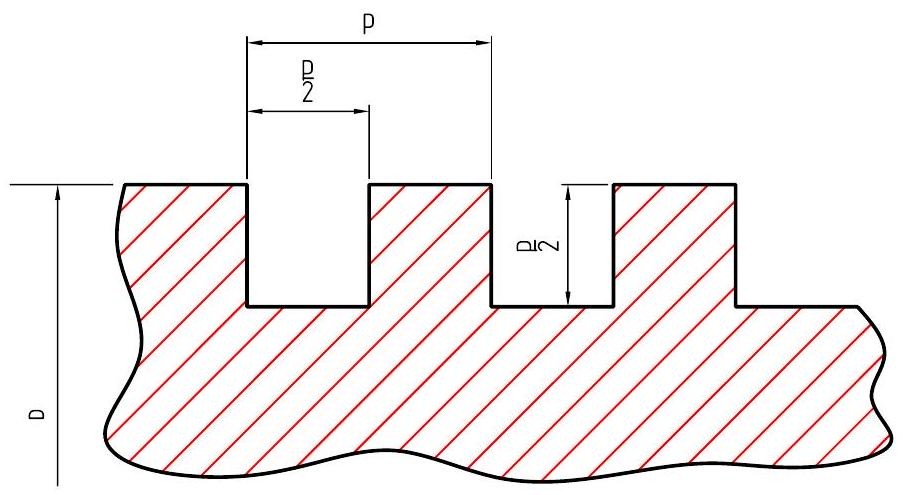
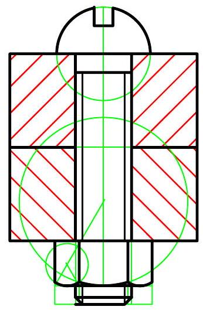

Chapter 7
Screw Threads
7.1 Introduction
A screw thread is a helical groove which is cut, rolled, or sometimes cast on a cylinder or cylindrical hole. The threads are parallel to each other with those on the cylinder (screw) being external, and those in the hole (nut) being internal. Tapered threads are formed on a cone or in a conical hole. The form of the groove varies with different threads depending on the use. Threads may be right- or left-handed and single or multi-start. Screw threads have three main applications:
- Assembly or fastening parts together.
- To adjust the position of parts.
- Power transmission purposes.
7.1.1 Screw Thread Terms
Figure 7.1: Screw thread terminology
Figure 7.1 shows the primary terms useful in defining screw threads. These terms are:
- External thread (screw); External thread (screw) A thread on the external surface of a cylinder.
- Internal thread (nut); Internal thread (nut) A thread on the internal surface of a cylinder.
- Major Diameter; Major Diameter The largest diameter of a screw thread.
- Minor Diameter; Minor Diameter The smallest diameter of a screw thread.
- Pitch diameter; Pitch diameter The diameter of an imaginary cylinder, the surface of which cuts the thread forms where the width of the thread and groove are equal.
- Crest; Crest The edge or surface that joins the sides of adjacent thread forms and is farthest from the cylinder axis
- Root; Root The edge or surface that joins the sides of adjacent thread forms and coincides with the cylinder from which the thread projects.
- Flanks; Flanks The straight sides which connect the crest and the root.
- Pitch; Pitch The distance between corresponding points on adjacent thread forms measured parallel to the axis
- Lead; Lead The distance a threaded part moves axially with respect to a fixed mating part, in one complete revolution.
- Form; Form The profile (cross-section) of the thread.
7.1.2 Thread Forms
"Thread Form" describes the shape of the thread if one cut a thread form in half along its axis and then looked at the thread configurations. Different thread forms have different uses:
i. Metric Thread
The ISO metric screw threads are the worlds most commonly used type of general purpose screw threads. The design principles of this thread form are defined in the standards ISO 68-1.
Figure 7.2: External ISO metric thread terms
Figure 7.3: Internal ISO metric thread
A metric ISO screw thread is designated by the letter M followed by the value of the nominal diameter D and the pitch, p , both expressed in mm and separated by a times sign e.g. $M 8 \times 1.5$, signifies that the thread has a nominal diameter of 8 mm and a pitch of 1.5 mm . Applications include assembly and adjustment purposes. Other types of threads for general purpose applications include:
- Unified thread standard (UTS)- commonly used in the USA and Canada.
- British Standard Whitworth - British standard fine threads and British standard cycle
ii. Square thread
This type of thread has its flanks normal to the axis thus making it the most ideal for power transmission purposes. However, the right angle flanks cause machining difficulties when the thread is cut on the lathe.
Figure 7.4: Square thread
iii. ACME thread
This type is an adaptation of the square thread, with the flanks having a thread angle of $29^{\circ}$. It is also used for power transmission applications where the nut has to be disengaged from the screw.
Figure 7.5: ACME thread
iv. Buttress thread
The front face against which the load is applied is inclined at $7^{\circ}$ to the vertical. The thread is used to transmit power in one direction only, indicated by the arrow on the diagram.
Figure 7.6: Buttress thread
7.1.3 Conventional Representation of Screw Threads
Since projection of screw threads is tedious and takes considerable time, threads are shown conventionally on engineering drawings.
On the longitudinal view of an external thread, the major diameter is shown by a pair of thick lines and the minor diameter by a pair of thin lines. The end of a thread is shown by a thick line. The end of the full thread is drawn as a thick line. The thread run out (incompletely formed threads) are represented by thin lines at $30^{\circ}$ to the major diameter. On the circular view, the major diameter appears as a complete thick circle and the minor diameter as a thin circle with a gap as shown in figure 7.7. For internal threads in section the minor diameter drilling is drawn
Figure 7.7: Conventional representation of crew threads
in thick lines. The major diameter and thread run outs are shown by thin lines. The hatching crosses the major diameter and terminates on the minor diameter. If an internal thread is shown in hidden detail, all lines are thin short dashes.
7.2 Threaded Fasteners
Most engineering products are composed of separate parts held together by some means of fastening. Threaded have advantage over permanent methods (riveting and welding) in that they are easily disassembled. Threaded fasteners have descriptive names with five types being the most common;
1. Bolt;
A bolt, has an integral head on one end and a thread on the other end and is passed through clearance holes in two parts and draws them together by means of a nut screwed on the threaded end. It comes in a variety of head forms, the most common being the hexagonal head and the square head. On the sectional view, the nut and bolt are not sectioned even though the section plane passes through them. If the details being joined are of a soft material, a plain washer may be placed under the nut and sometimes under the bolt head as well to prevent damage when the nut is tightened.
2. Stud;
A stud is a rod threaded on each end. The fastener passes through a clearance hole in one part and screws into a tapped hole in the other. A nut then draws the parts together. The stud is used when through bolts are not suitable for parts that must be removed frequently such as a cylinder head. They are also used in situations where there is insufficient space on one side of the assembly for bolt heads or nuts
Figure 7.8: Hexagonal bolt and nut assembly
Figure 7.9: Front and side view of a hexagonal bolt and nut assembly
3. Cap screw
A cap screw passes through a clearance hole in one piece and screws into a tapped hole in the other. The head, which is an integral part of the screw draws the parts together as the screw enters the tapped hole. A hexagonal head cap screw is similar to a bolt except that it generally has a greater length of thread.
4. Machine Screw
Is a small fastener used with a nut to function in the same way as a bolt or without a nut to function as cap screw. machine screws are used in a limited number of diameter sizes. These come in ten standardized head shapes which except for the hexagonal head, are available in slotted form or with cross recesses. The size of the recess varies with the size of the screw. The hexagonal machine screw is not made with a cross recess but may be optionally slotted.
Drawing proportions:
- -metal end length = 1.5d - 2d, includes run out threads
- -plain portion = d
- -nut end lengths
- $=2 \mathrm{~d}+6$ for nominal lengths up to 125 mm
- $=2 \mathrm{~d}+12$ for nominal lengths over 125-200
- $=2 \mathrm{~d}+25$ for nominal lengths over 200
Figure 7.10: Stud and nut assembly
Figure 7.11: Sectional view of a cap screw assembly
5. Set screw
A set screw screws into a tapped hole in an outer part, often a hub and bears with its point against an inner part, usually a shaft. Set screws hold two parts in relative
(a) Machine screw without a nut (fillister head)
(b) Machine screw with a nut (round head)
Figure 7.12: Sectional views of machine screw assembly
position by having the end set against the inner part.
Figure 7.13: Sectional view of a set screw assembly
Figure 7.14: Steps in drawing a hexagon-head bolt and hexagon nut
Figure 7.15: Steps in drawing a square-head bolt and square nut
3.27 Boft Proportions (Regular).
Figure 7.16: Bolt proportions